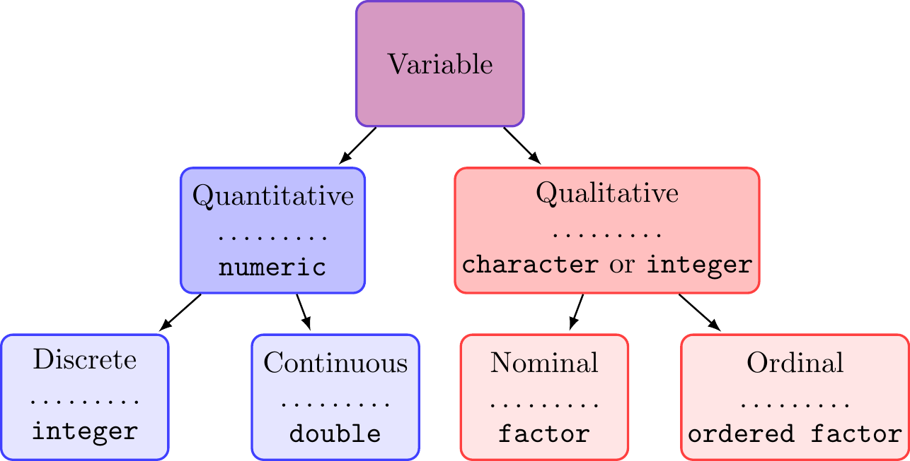
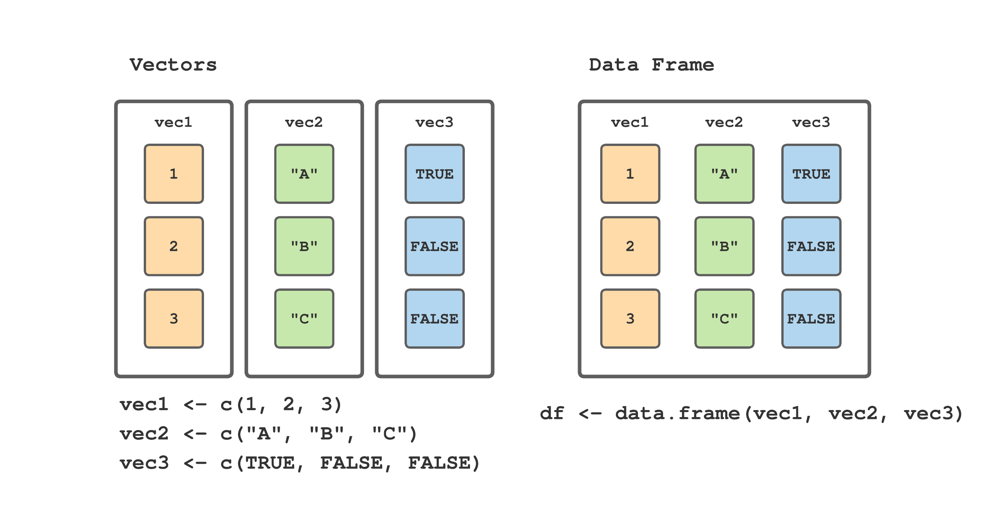

Chapter 4 Data structures
A data structure is a format for organizing and storing data. The structure is designed so data can be accessed and worked with in specific ways. Programming languages have methods (or functions) designed to operate on different kinds of data structures.
In this chapter we focus on data structures that serve as the essential building blocks for data analysis in R. To help initial understanding, the data in this chapter are relatively modest in size and complexity. The ideas and methods, however, generalize to larger and more complex datasets.
The base data structures in R are vectors, matrices, arrays, data frames, and lists. The first three (vectors, matrices, and arrays) require all elements to be of the same type (i.e., numeric, character, or logical); hence, these structures are referred to as homogeneous. Data frames and lists allow elements to be of different types, e.g., some elements of a data frame may be numeric while other elements may be character. Perhaps not surprisingly, these structures are called heterogeneous. These base structures can also be organized by their dimensionality, i.e., 1-dimensional, 2-dimensional, or N-dimensional, as shown in Table 4.1.
| Dimension | Homogeneous | Heterogeneous |
|---|---|---|
| 1 | Atomic vector | List |
| 2 | Matrix | Data frame |
| N | Array |
R has no scalar types, i.e., individual values; rather scalars are represented using a vector of length one.
Generically, we talk about data structures as objects. An efficient way to understand what comprises a given object is to use the str() function. str() is short for structure and prints a compact, human-readable description of any R data structure. For example, in the code below, we show that a scalar is actually a vector of length one.
#> num 1#> [1] TRUE#> [1] 1Here we assigned a the scalar value 1. str(a) prints num 1, which says a is numeric of length one. Then we used is.atomic() and length() to convince ourselves that a is in fact an atomic vector of length one. There are a set of similar logical tests for the other base data structures, e.g., is.matrix(), is.array(), is.data.frame(), and is.list(). These will all come in handy as we encounter different objects.
4.1 Types of variables
Before we dive into the different data structures in R, it will be useful to define the different types of variables we may encounter in forestry and environmental data sets. Figure 4.1 displays the fundamental data types we will work with in this book, as well as the R data type we will use to represent each variable type in R. We define a variable as any sort of characteristic that might vary across individual units (e.g., live trees) within a population of interest (e.g., all live trees in a forest).19 Following Figure 4.1, a variable is initially classified as either quantitative or qualitative.
A quantitative variable has values that give a notion of magnitude, that is, the values are a numerical measure. This numerical measure is either continuous or discrete. A quantitative continuous variable can take an infinite (not countable) number of possible values, i.e., an infinitely fine increment from one value to the next. Said differently, a continuous variable has an arbitrary number of decimal places for a given value. Examples could include height, weight, and volume. In comparison, a quantitative discrete variable can take a finite (countable) number of possible values when moving from one value to the next. The values are often (but not always) integers. Examples include age in whole years, number of trees, and number of fire events.
A qualitative variable (also referred to as a categorical variable) has values that represent different categories. Qualitative variables are either nominal or ordinal. A qualitative nominal variable takes values where no ordering is possible or implied in the categories. For example, the variable species is nominal because there is no inherent or natural order in the species names. Similarly, sex coded as male or female is nominal because there is no apparent ordering. In contrast, the categories of a qualitative ordinal variable have some natural ordering. For example, the variable tree canopy position can take values suppressed, intermediate, co-dominant, or dominant, where these categories themselves imply an ordering. Further examples are disturbance severity code with categories low, medium, and high, or perhaps forest or ecosystem succession stages. Again, in these examples, there is a natural order to the categories.

FIGURE 4.1: Variable types with corresponding R data types added below the dotted line.
4.2 Vectors
Think of a vector as a structure to represent one variable in a dataset.20 For example, a vector might hold the measured heights, in meters, of seven trees, while another vector might hold the tree species name. The c() function is useful for creating (small) vectors and for modifying existing vectors. Think of c as standing for “combine.” Consider the following use of c() to create the dbh and spp vectors.
#> [1] 20 18 13 16 10 14spp <- c("Acer rubrum", "Acer rubrum", "Betula lenta",
"Betula lenta", "Prunus serotina", "Prunus serotina")
spp#> [1] "Acer rubrum" "Acer rubrum"
#> [3] "Betula lenta" "Betula lenta"
#> [5] "Prunus serotina" "Prunus serotina"We see that elements of a vector are separated by commas when using the c() function to create a vector. Also, note character strings are placed inside quotation marks.21
c() can also be used to add to an existing vector. For example, suppose we want to add a 13 in DBH red maple to the dataset. We can modify our existing vectors as follows.
#> [1] 20 18 13 16 10 14 13#> [1] "Acer rubrum" "Acer rubrum"
#> [3] "Betula lenta" "Betula lenta"
#> [5] "Prunus serotina" "Prunus serotina"
#> [7] "Acer rubrum"4.2.1 Types, conversion, and coercion
It’s important to distinguish between different data types. For example, it makes sense to calculate the mean of DBH measurements stored in dbh, but it doesn’t make sense to compute the mean of species stored in spp. Vectors can be of six different types: character, double, integer, logical, complex, and raw. We’ll not encounter the complex and raw types in everyday data analysis, so we focus on the first four data types.
character: consists of one or more letters. Oursppis a character vector.#> [1] "character"We’ll often use the phrase “character string” or simply “string” when talking about character types. A string is just an element comprising more than one character. For example,
"Acer rubrum"is a character string.22double: a numeric that can be an integer or non-integer value (e.g., 10, 4.2). Given the values indbhare all integers, it might be surprising to see the output oftypeof(dbh)below isdouble. By default, R creates a double type vector when numeric values are given viac().#> [1] "double"integer: a numeric that can only be an integer. We can create an integer vector by placing the letterLnext to each of the numbers when forming the vector. For example, an integer vector of DBH values is created as follows.#> [1] "integer"logical: represents true or false values usingTRUEorFALSE, respectively. To illustrate logical vectors, imagine the field technician who measured the trees indbhandsppalso indicated if each tree was acceptable growing stock (ags) and their determination was coded asTRUEif the tree was acceptable andFALSEif the tree was not acceptable.#> [1] TRUE TRUE FALSE TRUE FALSE FALSE TRUE#> [1] "logical"
When it makes sense, it’s possible to convert vectors to different types. Consider the following examples.
#> [1] 20 18 13 16 10 14 13#> [1] "integer"#> [1] "20" "18" "13" "16" "10" "14" "13"#> [1] 1 1 0 1 0 0 1#> Warning: NAs introduced by coercion#> [1] NA NA NA NA NA NA NA#> [1] 4The integer version of dbh doesn’t look any different, but it’s stored differently, which can be important both for computational efficiency and for interfacing with other software and programming languages. Converting dbh to character goes as expected—the quoted character representation of the numbers replaces the numbers themselves. Converting the logical vector ags to double is pretty straightforward too—FALSE is converted to 0 and TRUE is converted to 1. Now think about converting the character vector spp to a numeric double vector. It’s not at all clear how to represent "Acer rubrum" as a number. In fact, in this case, R creates a double vector with each element set to NA, which is the representation of missing data, and throws a warning exception.23 Finally consider the code sum(ags). ags is a logical vector, but when R sees that we’re asking to sum this logical vector, it automatically converts it to a numeric vector and then adds the 0’s and 1’s representing FALSE and TRUE, respectively (see more on this topic in the next section).
Similar to typeof(), there are functions that test whether a vector is of a particular type, a couple of which we’ve already seen. Notice, the test result is returned as a logical value.
#> [1] TRUE#> [1] FALSE#> [1] TRUE#> [1] TRUE4.2.1.1 Coercion
An important concept in any programming language is the conversion of data types from one type to another. We’ve shown how to manually convert objects to different types using the as.* functions, where * represents the desired type. Automatic data type conversion also occurs, a process referred to as coercion. Consider the following examples.
#> [1] 1 2 3 1#> [1] "1" "2" "3" "aspen"#> [1] "TRUE" "FALSE" "aspen"#> [1] 21 19 13 17 10 14 14As noted previously, vectors can only contain elements of one type. If more than one type is included in a c() function, R silently coerces the vector to be of one type. The examples above illustrate R’s coercion rules. If any element is a character, then the whole vector is character type. If there’s a mix of numeric (either integer or double) and logical elements, then the whole vector is numeric. Note what happened when we added the numeric vector dbh to the logical vector ags. The logical vector was silently coerced to be numeric, so that FALSE became 0 and TRUE became 1, and then the two numeric vectors were added elementwise.
4.2.2 Patterned data
It’s often convenient to generate patterned data for use in subsetting tasks, designing experiments, and identifying measurement units for some inventory designs. For example, we might need all the integers from 1 through 20, or a sequence of 100 values equally spaced between 0 and 1. The R functions seq() and rep() as well as the “colon operator” : are handy for generating such patterned data.
As we’ve seen now a few times, the colon operator generates a sequence of values with increments of 1.
#> [1] 1 2 3 4 5 6 7 8 9 10#> [1] -5 -4 -3 -2 -1 0 1 2 3#> [1] 10 9 8 7 6 5 4#> [1] 3.1416 4.1416 5.1416 6.1416seq() generates either a sequence of pre-specified length or a sequence with pre-specified increments.
#> [1] 0.0 0.1 0.2 0.3 0.4 0.5 0.6 0.7 0.8 0.9 1.0#> [1] 1.0000 1.3333 1.6667 2.0000 2.3333 2.6667 3.0000
#> [8] 3.3333 3.6667 4.0000 4.3333 4.6667 5.0000#> [1] 3.00000 2.55556 2.11111 1.66667 1.22222
#> [6] 0.77778 0.33333 -0.11111 -0.55556 -1.00000rep() replicates the values in a given vector.
#> [1] 1 2 4 1 2#> [1] 1 2 4 1 2 4 1 2 4#> [1] "a" "b" "c" "a" "b" "c" "a" "b" "c"#> [1] "a" "a" "a" "b" "b" "b" "c" "c" "c"4.2.3 Indexing, accessing, and recycling elements
To access, and possibly change, a vector element’s value use the element’s index (i.e., position along the vector) in square brackets. For example, dbh[4] refers to the fourth element in the dbh vector, which has a value of 16. R starts the numbering of elements at 1, e.g., the first element in the dbh vector is dbh[1].
As a bit of an aside, when a vector is printed in the console window, R puts the index of the first value on a line in square brackets before the line of output. So the mysterious [1] before all output we’ve seen thus far in the book just means the index of the first value on the line is 1. If it’s a long vector with more than one line of output, each new line is preceded by the index for the first value printed on the line. For example, if the output has 40 values, and 15 values appear on each line, then the first line will have [1] at the left, the second line will have [16] to the left, and the third line will have [31] to the left.
Here are a few indexing and replacement examples using the dbh vector.
#> [1] 20 18 13 16 10 14 13#> [1] 10#> [1] 20 18 13#> [1] 13#> [1] 20 18 13 16 10 14 13#> [1] 20 18 202 16 10 14 13#> [1] 16 8 2 16 10 14 13Notice in the code above, including nothing in the square brackets, i.e., dbh[], results in the whole vector being returned. We can also replace vector values by accessing the elements where the new values will be assigned. For example, the value at dbh[3] is replaced with 202, then the vector’s first three values dbh[1:3] are replaced with 16, 8, and 2, respectively.
On your own, investigate the three replacement operations on the vector x in the code below.
x <- rep(0, times = 4) # Create a vector of four zeros.
x[1:3] <- c(1, 2)
x[1:4] <- c(3, 4)
x[1] <- c(5, 6)Warnings thrown by two of the replacement operations above highlight a behavior called recycling. If R encounters two vectors of different lengths in an operation, it replicates (recycles) the smaller vector until its length equals the longer vector’s length before performing the operation. This recycling happens in a replacement operation. If the number of elements to replace is different than the number of values supplied, then any necessary vector recycling occurs followed by truncation to match vector lengths and a warning is thrown. Importantly, a warning is only thrown if truncation is necessary to match vector lengths. Therefore, if the number of elements to replace is a multiple of the number of elements supplied, then any necessary recycling occurs to match vector lengths but no warning is thrown. So, for the first replacement operation above, c(1, 2) is recycled to c(1, 2, 1, 2) then the last 2 is truncated to make a vector of length three to replace x elements 1:3 and a warning is thrown. The next replacement operation is similar to the first, but no warning is thrown because no truncation is necessary. For the last replacement operation, no recycling is necessary, only truncation of the value 6 to make the replacement vector length equal 1. We’ll see recycling again when working with comparison and mathematical operators in Section 4.7 and 10.2.3, respectively.
Negative indexes in the square brackets remove corresponding elements. A zero as an index returns nothing (more precisely, it returns a length zero vector of the appropriate type).
#> [1] 16 8 16 10 14 13#> [1] 16 8 2 16 10 14#> [1] 8 16 14 13#> numeric(0)#> [1] 8 16#> Error in dbh[c(-1, 2)]: only 0's may be mixed with negative subscriptsNotice mixing zero and other non-zero indexes is allowed, but mixing negative and positive indexes is not allowed.
What about the case where we don’t know the positions of the elements we want to print or modify? For example, say we want the DBH of all acceptable growing stock trees in the ags vector. This is covered in Section 4.8, where we learn how to subset using logical values and conditional statements.
4.3 Factors
The factor data type represents categorical, or qualitative variables (Figure 4.1). When represented using a factor, the different categories (or values) a categorical variable can take are called levels. For example, if the spp character vector, created at the beginning of Section 4.2, was a factor then species names would be the levels.
In many analyses, representing a categorical variable using a character vector (or perhaps an integer vector) is sufficient. However, for some analyses, representing the categorical variable using a factor has advantages. Consider two categorical variables, one representing tree crown class with levels S, I, C, and D (i.e., Suppressed, Intermediate, Codominate, Dominant) and another representing sawlog quality grade of the first log with levels Grade 1, Grade 2, and Grade 3. For the first variable, suppose that in a small dataset, all trees are either dominant or codominant crown class. If we represented the crown class variable using a character vector, there would be no way to know the suppressed and intermediate categories exist, because they happen to not be present in the dataset. For the log grade variable the character vector representation does not explicitly indicate the natural ordering of the levels, i.e., Grade 1 is better than Grade 2 and Grade 2 is better than Grade 3.
The factor data type maintains all possible levels a categorical variable can take (even if they’re not represented in any given vector of observations). For categorical ordinal variables, the factor allows level ordering so, e.g., the additional information about log grade ordering can be considered in an analysis.
# The nominal crown class variable.
crown_class <- c("D", "D", "C", "D", "D", "C", "C")
crown_class # Character.#> [1] "D" "D" "C" "D" "D" "C" "C"#> [1] D D C D D C C
#> Levels: S I C D# The ordinal log grade variable.
grade <- c("Grade 1", "Grade 1", "Grade 3", "Grade 2",
"Grade 3", "Grade 3", "Grade 2")
grade <- factor(grade,
levels = c("Grade 3", "Grade 2", "Grade 1"),
ordered = TRUE)
grade#> [1] Grade 1 Grade 1 Grade 3 Grade 2 Grade 3 Grade 3
#> [7] Grade 2
#> Levels: Grade 3 < Grade 2 < Grade 1In the factor version of crown class, levels are explicitly listed so it’s clear the two included levels are not all possible levels. In the factor version of log grade, the ordering is explicit and preserved for use in subsequent analysis.
4.4 Missing data, infinity, and other special data types
Most real-world datasets have variables where some observations are missing. In longitudinal studies of tree growth (i.e., where trees are measured over time) it’s common that trees die or cannot be located for subsequent remeasurement. Statistical software should be able to represent missing data and analyze datasets in which some data are missing.
As we’ve already seen several times, NA is the missing data value in R. Because missing values may occur in numeric, character, and other data types, and because R requires vectors containing only elements of one type, there are different types of NA values. Usually R determines the appropriate type of NA value automatically. It’s worth noting that NA is NOT the same as the character string "NA" as illustrated below with the aid of the is.na() function.
#> [1] FALSE TRUE FALSENow add a quoted NA to the end of missing_species and test again using is.na(). The is.na() result shows the quoted NA is not a missing value but rather a character string.
#> [1] "Quercus rubra" NA "Acer saccharum"
#> [4] "NA"#> [1] FALSE TRUE FALSE FALSEHow should missing data be treated in computations, such as finding a vector’s sum or mean? One possibility is to return an NA if missing values are encountered in the computation. Another is to remove any missing values prior to performing the computation.
The example below shows the mean() function’s default behavior is to return NA if any missing values are present in the input. If you wish to remove missing values prior to computing the mean, then set the mean() function’s na.rm argument to TRUE. While the na.rm argument is available in many mathematical functions, different functions have different default behaviors so be sure to consult their manual pages for details.
#> [1] NA#> [1] 2.754.4.1 Infinity and NaN
What happens if code requests division by zero, or results in a number that’s too large to be represented? Knowing how R handles these situations comes in handy when your code produces an unexpected result. Here are some examples.
#> [1] 0 1 2 3 4#> [1] Inf 1.00000 0.50000 0.33333 0.25000#> [1] NaN 1 1 1 1#> [1] 1.0240e+03 1.0715e+301 InfInf and -Inf represent infinity and negative infinity (and numbers that are too large in magnitude to be represented as double). NaN occurs when the result of a calculation is undefined, such as dividing zero by zero. R, like most programming languages, follows the ANSI/IEEE 754 Floating-Point Standard that prescribes behavior of mathematical operations involving Inf, -Inf, and NaN (IEEE 2008).
4.5 Data frames
Data are commonly rectangular in form, with variables as columns and measurement units as rows. In R, such data are held in a data frame where columns (or variables) are equal length vectors of possibly different data types. A data frame constructed from a set of vectors is illustrated in Figure 4.2.

FIGURE 4.2: Relationship between vectors and data frames in R.
Let’s continue using the species, DBH, and acceptable growing stock vectors defined at the beginning of Section 4.2. The code below follows Figure 4.2 to form a data frame using the three vectors, with columns spp, dbh, and ags and rows comprising measurements on each tree. 24
#> Species DBH AGS
#> 1 Acer rubrum 16 TRUE
#> 2 Acer rubrum 8 TRUE
#> 3 Betula lenta 2 FALSE
#> 4 Betula lenta 16 TRUE
#> 5 Prunus serotina 10 FALSE
#> 6 Prunus serotina 14 FALSE
#> 7 Acer rubrum 13 TRUEThe column names and associated vectors are passed as arguments to data.frame(). Notice that while defining the data.frame() function arguments, we chose to set the column names to something different than the vector names.
Column names can be extracted and changed using either names() or colnames() functions. Both functions return a vector that can be modified as we saw in Section 4.2.3. Below we change the column names to species, dbh, acceptable_stock and then change them back to Species, DBH, AGS.
#> [1] "Species" "DBH" "AGS"#> [1] TRUE#> [1] "species" "dbh"
#> [3] "acceptable_stock"Rows can also have names, although if row names are desired it’s potentially more useful to include a separate column in the data frame that contains those names. The default row names are sequential numbers (as characters) from "1" to the number of rows in the data frame. Like column names, row names can be extracted and changed if desired.
#> [1] "1" "2" "3" "4" "5" "6" "7"#> [1] "Tree 1" "Tree 2" "Tree 3" "Tree 4" "Tree 5"
#> [6] "Tree 6" "Tree 7"Finally, let’s take a look at the data frame’s dimensions. dim() returns a vector that holds the number of rows and number of columns, respectively. Also, try the functions nrow() and ncol() on the data frame and see what happens (this should help explain the paste() function used to name rows in the code above).
#> [1] 7 3Next we’ll look at a slightly larger dataset comprising loblolly pine growth measurements. The code below loads the dataset using read.csv(), introduced in Section 3.3.2, and assigns the resulting data frame to loblolly. For fun, we use class() to prove loblolly is in fact a data frame.
#> [1] "data.frame"#> height age seed
#> 1 4.51 3 301
#> 2 10.89 5 301
#> 3 28.72 10 301
#> 4 41.74 15 301
#> 5 52.70 20 301
#> 6 60.92 25 301Each row in the loblolly dataset is a tree and columns record height (ft), age (years), and seed source code (seed). How many trees are in this dataset?
4.5.1 Accessing elements
To access a specific element (or elements) in a data fame we need to specify both the row and column indexes. As illustrated below, inside the square brackets, the desired row indexes are specified first, followed by a comma, then the desired column indexes.
#> [1] 3#> [1] 3 5 10#> age seed
#> 1 3 301
#> 2 5 301
#> 3 10 301#> [1] 4.51 10.89 28.72 41.74 52.70 60.92 4.55 10.92
#> [9] 29.07 42.83 53.88 63.39 4.79 11.37 30.21 44.40
#> [17] 55.82 64.10 3.91 9.48 25.66 39.07 50.78 59.07
#> [25] 4.81 11.20 28.66 41.66 53.31 63.05 3.88 9.40
#> [33] 25.99 39.55 51.46 59.64 4.32 10.43 27.16 40.85
#> [41] 51.33 60.07 4.57 10.57 27.90 41.13 52.43 60.69
#> [49] 3.77 9.03 25.45 38.98 49.76 60.28 4.33 10.79
#> [57] 28.97 42.44 53.17 61.62 4.38 10.48 27.93 40.20
#> [65] 50.06 58.49 4.12 9.92 26.54 37.82 48.43 56.81
#> [73] 3.93 9.34 26.08 37.79 48.31 56.43 3.46 9.05
#> [81] 25.85 39.15 49.12 59.49Note that loblolly[, 1] returns ALL elements in the first column. This agrees with the behavior for vectors, where leaving an index out of the square brackets returns all values. In this case we’re asking for all rows, and the first column. Similarly, if we specify loblolly[1, ] all column values for row 1 will be returned.
We can also access the columns (or rows) using their names.
#> [1] 4.51 10.89 28.72 41.74#> age seed
#> 1 3 301
#> 2 5 301
#> 3 10 301
#> 4 15 301There is another way to access specific columns, using the $ notation.
#> [1] 4.51 10.89 28.72 41.74 52.70 60.92 4.55 10.92
#> [9] 29.07 42.83 53.88 63.39 4.79 11.37 30.21 44.40
#> [17] 55.82 64.10 3.91 9.48 25.66 39.07 50.78 59.07
#> [25] 4.81 11.20 28.66 41.66 53.31 63.05 3.88 9.40
#> [33] 25.99 39.55 51.46 59.64 4.32 10.43 27.16 40.85
#> [41] 51.33 60.07 4.57 10.57 27.90 41.13 52.43 60.69
#> [49] 3.77 9.03 25.45 38.98 49.76 60.28 4.33 10.79
#> [57] 28.97 42.44 53.17 61.62 4.38 10.48 27.93 40.20
#> [65] 50.06 58.49 4.12 9.92 26.54 37.82 48.43 56.81
#> [73] 3.93 9.34 26.08 37.79 48.31 56.43 3.46 9.05
#> [81] 25.85 39.15 49.12 59.49#> [1] 3 5 10 15 20 25 3 5 10 15 20 25 3 5 10 15 20
#> [18] 25 3 5 10 15 20 25 3 5 10 15 20 25 3 5 10 15
#> [35] 20 25 3 5 10 15 20 25 3 5 10 15 20 25 3 5 10
#> [52] 15 20 25 3 5 10 15 20 25 3 5 10 15 20 25 3 5
#> [69] 10 15 20 25 3 5 10 15 20 25 3 5 10 15 20 25#> Error in eval(expr, envir, enclos): object 'height' not found#> Error in eval(expr, envir, enclos): object 'age' not foundNotice that typing the variable name, such as height or age, without the name of the data frame (and a dollar sign) as a prefix, does not work. The variables height and age are columns in the loblolly data frame, not objects in the R environment and hence must be selected accordingly.
When your data frame subset includes a single column (e.g., loblolly[, 1] or loblolly[, "height"]) the resulting object is no longer a data frame. Rather, R simplifies the object to a vector. This might not seem like a big deal; however, it can be very frustrating and potentially break your code when you expect an object to behave like a data frame and it doesn’t because it’s now a vector. If you don’t like this behavior you can add the optional argument drop = FALSE after the column indexes, e.g., loblolly[, "height", drop = FALSE], which stops the simplification, or see Section 6.2 for a data frame extension that doesn’t use this simplifying.
4.5.2 Adding columns
Say we want to add two new columns to loblolly that measures height in meters and centimeters (recall the current height column is in feet). The $ notation makes this task straightforward.
4.5.3 Removing columns
Suppose we realize the columns added to loblolly were not as useful as we had hoped and so we want to remove them. Here are three ways to remove the height_m and height_cm columns.
Subset the data frame by selecting the columns of interest and reassign to
loblolly.Subset the data frame by telling R which columns not to select and reassign to
loblolly.Assign the columns we seek to remove to
NULL.
4.5.4 Transforming columns
We can also easily transform existing columns in a data frame. Suppose we wish to transform the age column in loblolly to represent the number of years since a base age of 10.
#> [1] -7 -5 0 5 10 154.5.5 Rearranging columns
While rearranging columns is usually not all that important for actual data analysis purposes, we often want to rearrange the columns in a dataset for visualization purposes. Say we want to move the seed and age columns before the height column. This can be done with a column subset operation using either the column names or indexes.
loblolly <- loblolly[, c(3, 2, 1)]
# Or.
loblolly <- loblolly[, c("seed", "age", "height")]
names(loblolly)#> [1] "seed" "age" "height"4.6 Lists
The third data structure we’ll work with is a list. Technically a list is a vector, but one in which elements can be of different types. For example a list may have one element that’s a vector, one that’s a data frame, and another that’s a function. To appreciate a list’s usefulness, consider designing a function that fits a simple linear regression model (you don’t need to know about regression analysis to follow this example). Evaluating a regression model’s performance typically involves looking at several different outputs, some of which are listed below.
- The slope and intercept coefficients (a numeric vector with two elements).
- The residuals (a numeric vector with \(n\) elements, where \(n\) is the number of data points).
- Fitted values for the data (a numeric vector with \(n\) elements).
- The names of the dependent and independent variables (a character vector with two elements).
In fact lm() fits a regression model and returns a list of these and other useful outputs (see Section ?? for details). The code below fits a regression model to the height and age variables in the loblolly data frame.
#> [1] "list"#> [1] "coefficients" "residuals" "effects"
#> [4] "rank" "fitted.values" "assign"
#> [7] "qr" "df.residual" "xlevels"
#> [10] "call" "terms" "model"#> (Intercept) age
#> -1.3124 2.5905#> [1] 84The list returned by lm() above is assigned to ht_age_mod. mode() returns the type or storage mode of an object and is used above just to prove that lm() returns a list.25 The code also illustrates that named elements of a list can be accessed using the dollar sign notation, similar to data frames.26 Notice the coefficients list element is a length 2 vector of regression coefficients, while the residuals element is a length 84 vector of residuals.
Similar to data.frame(), you can create a list using list() as illustrated below using some data structures introduced earlier in the chapter. The first list element, named first, holds the dbh vector we created in Section 4.2. The second list element, named second, holds the trees data frame. The third list element, named third, holds a list with elements named a and b that hold a vector of values 1 through 10, and a copy of the trees data frame, respectively.
#> $first
#> [1] 16 8 2 16 10 14 13
#>
#> $second
#> Species DBH AGS
#> Tree 1 Acer rubrum 16 TRUE
#> Tree 2 Acer rubrum 8 TRUE
#> Tree 3 Betula lenta 2 FALSE
#> Tree 4 Betula lenta 16 TRUE
#> Tree 5 Prunus serotina 10 FALSE
#> Tree 6 Prunus serotina 14 FALSE
#> Tree 7 Acer rubrum 13 TRUE
#>
#> $third
#> $third$a
#> [1] 1 2 3 4 5 6 7 8 9 10
#>
#> $third$b
#> Species DBH AGS
#> Tree 1 Acer rubrum 16 TRUE
#> Tree 2 Acer rubrum 8 TRUE
#> Tree 3 Betula lenta 2 FALSE
#> Tree 4 Betula lenta 16 TRUE
#> Tree 5 Prunus serotina 10 FALSE
#> Tree 6 Prunus serotina 14 FALSE
#> Tree 7 Acer rubrum 13 TRUE4.6.1 Accessing elements
We’ve already seen that list elements can be accessed using the dollar sign notation. In addition, square bracket notation can be used. However, there is a subtle wrinkle—using either single or double square brackets. Let’s try accessing the first element in our example list using the dollar sign $, double square bracket [[]], then single square bracket [].
#> [1] 16 8 2 16 10 14 13#> [1] "numeric"#> [1] 16 8 2 16 10 14 13#> [1] "numeric"#> $first
#> [1] 16 8 2 16 10 14 13#> [1] "list"Notice the dollar sign and double bracket return a numeric vector, while the single bracket returns a list. Also notice the difference in results below.
#> $first
#> [1] 16 8 2 16 10 14 13
#>
#> $second
#> Species DBH AGS
#> Tree 1 Acer rubrum 16 TRUE
#> Tree 2 Acer rubrum 8 TRUE
#> Tree 3 Betula lenta 2 FALSE
#> Tree 4 Betula lenta 16 TRUE
#> Tree 5 Prunus serotina 10 FALSE
#> Tree 6 Prunus serotina 14 FALSE
#> Tree 7 Acer rubrum 13 TRUE#> [1] 8The single bracket form returns the first and second elements of the list, while the double bracket form returns the second element in the first element of the list. Generally, don’t put a vector of indexes or names in a double bracket, as you’ll likely get unexpected results. See, for example, the results below.27
#> Error in example_list[[c(1, 2, 3)]]: recursive indexing failed at level 2To recap, the single bracket [] returns a list of object(s) held at the given indexes or names placed in the bracket, whereas the double brackets [[]] returns the object itself held at the index or name placed in the innermost bracket. Put differently, a single bracket is used to access a range of list elements and returns a list, a double bracket should be used to access a single list element and returns the object held in the given element.
4.6.2 Adding and removing elements
As you’ve now already seen, there are often several ways to accomplish the same task using R. Here are three options for adding the loblolly data frame to example_list. Run any one of the options. Again, use str() for an informative look at the list’s structure.
example_list$loblolly <- loblolly
# Or.
example_list[["loblolly"]] <- loblolly
# Or, recalling a list is a vector, you can use the c() function.
example_list <- c(example_list, list(loblolly = loblolly)) You can remove list elements by name or index. Again, run any one of the options below.
4.7 Comparison and logical operators
Comparison operators are binary operators that test a comparative condition between operands and return a logical value to indicate the test result. You might, or might not, recall from your grade school years an operand is what operators are applied to, and an operator is binary if it has two operands. For example, the greater than binary operator in \(1 > 2\) tests if the left operand 1 is greater than the right operand 2, the result of which is false.
Let’s walk through the comparison operators available in R. We’ll present the operator and its definition, followed by an example using the dbh and spp vectors created in Section 4.2. First, let’s recall the values held in these vectors.
#> [1] 16 8 2 16 10 14 13#> [1] "Acer rubrum" "Acer rubrum"
#> [3] "Betula lenta" "Betula lenta"
#> [5] "Prunus serotina" "Prunus serotina"
#> [7] "Acer rubrum"==the equality operator: The “double equals sign” tests if operands are equal. Below we perform a logical test to determine whichsppvector elements equalAcer rubrum.#> [1] TRUE TRUE FALSE FALSE FALSE FALSE TRUENot surprisingly, the first two and last elements return
TRUEand the other four elements returnFALSE. Notice we’re using the==sign, not the=sign. Mixing up the comparison operator==and assignment operator=is a common error.!=the inequality operator: Tests if operands are not equal, and is thus the inverse of==. We see this by testing which elements insppdo not equalAcer rubrum.#> [1] FALSE FALSE TRUE TRUE TRUE TRUE FALSE<,<=,>,>=less than, less than or equal to, greater than, and greater than or equal to operators, respectively: Using thedbhvector, determine which elements are greater than 16 and then greater than or equal to 16.#> [1] FALSE FALSE FALSE FALSE FALSE FALSE FALSE#> [1] TRUE FALSE FALSE TRUE FALSE FALSE FALSE
While not immediately apparent from the examples above, recycling is occurring before comparison operations. Recall from Section 4.2.3, the shorter vector is recycled (repeated) then, if needed, truncated to match the length of the longer vector. If truncation occurs then a warning is thrown. In all cases above, the right operand vector of length 1 is recycled to match the left operand vector length before the comparison operator is applied. For example, the length 1 vector "Acer rubrum" is recycled to match the length 7 spp vector then the equality operator is applied elementwise between the two, now equal length, vectors.28
Suppose we want to know which dbh vector elements are greater than 14 and less than 20. Answering this question requires use of two comparison operators, i.e., \(<\) and \(>\). In such cases, logical operators are used to combine multiple comparison operations into a single logical statement. We consider the following logical operators “and”, “or”, “xor”, and “negation.”
Importantly, in order of operation, comparison operators precede logical operators. The Syntax manual page (i.e., run ?Syntax on the console) lists R operators’ order of operation, where you’ll notice the comparison operators are listed before the logical operators in the precedence groups under the Details Section.
Let’s walk through each of the logical operators.
&the “and” operator: A comparison using the&operator returnsTRUEwhen both operands areTRUEandFALSEotherwise. The&operator works elementwise on the logical vector operands. Consider the following example.#> [1] FALSE TRUE TRUE FALSE TRUE TRUE TRUE#> [1] TRUE FALSE FALSE TRUE FALSE TRUE TRUE#> [1] FALSE FALSE FALSE FALSE FALSE TRUE TRUEFirst we show the results of
dbh < 16anddbh > 10separately. When combining the comparison operations using the&operator, R first performsdbh < 16anddbh > 10, then applies&elementwise on the operands. The elementwise&returnsTRUEwhen the element in thedbh < 16vector isTRUEand the element in thedbh > 10vector isTRUE, which in this case is DBH 14 and 13. The key point to remember is that&returnsTRUEonly if both operands areTRUE.|the “or” operator: A comparison using the|operator returnsTRUEif at least one operand isTRUEandFALSEotherwise. Like the&operator, the|operator works elementwise on the operands. Let’s use the same example as before, but now we’ll look for trees with a DBH less than 16 or a DBH greater than 10.#> [1] TRUE TRUE TRUE TRUE TRUE TRUE TRUENot surprisingly, this operation returns
TRUEfor all elements, because all elements indbhare either less than 16 or greater than 10.xorthe “exclusive or” operator: A comparison using thexoroperator returnsTRUEif only one of the operands isTRUEandFALSEotherwise.#> [1] TRUE TRUE TRUE TRUE TRUE FALSE FALSEAbove, the first five elements are
TRUEbecause only one operand isTRUE, and the last two elements areFALSEbecause both operands areTRUE.While we can imagine cases where this operator would be handy, we’ve never found the occasion to use it in our own code.
!the “negation” or “not” operator: The exclamation point!(called “bang” in programmer’s slang) reverses a logical value, i.e.!TRUEisFALSEand!FALSEisTRUE. The code below returnsTRUEfor DBH values not greater than 14 (while not required, the parentheses emphasize the order of operation). Also notice!is a unary operator, i.e., it acts on a single operand to its right.#> [1] FALSE TRUE TRUE FALSE TRUE TRUE TRUE
There is a “&&” and “||” variant of “&” and “|”, respectively. These “double” operators examine only the first element of operand vectors in a comparison rather than comparing element by element. There are a few cases where && and || are useful when writing conditional statements in functions (see, e.g., Chapter 5); however, we’ll generally not make use of them in this book.
4.7.1 The %in% operator
Suppose we want to identify the dbh vector elements equal to 13, 10, or 14. We can do this using the equality operator == and the | operator as follows.
#> [1] 16 8 2 16 10 14 13#> [1] FALSE FALSE FALSE FALSE TRUE TRUE TRUEHowever, this is a little clunky, involves a lot of typing, and generally makes code hard to read. Lucky for us, R has the “in” operator, %in%, to accomplish this task in a more intuitive and easy-to-read manner.
#> [1] FALSE FALSE FALSE FALSE TRUE TRUE TRUEIn the spirit of coding techniques to promote efficient and readable code, we’ll use the %in% operator throughout the book.
Comparison and logical operators are invaluable to identify subsets of data that meet specified conditions. The next section explores how conditional and logical operators facilitate subsetting vectors, data frames, and lists.
4.8 Subsetting with logical vectors
Consider the loblolly data frame. How can we access only those trees with heights more than 50 m? How can we access the age of those trees taller than 50 m? How can we compute the mean height of all trees from seed source 301? The dataset is small enough that it would not be too onerous to extract the values by hand. However, for larger or more complex datasets, this task would be very difficult or impossible in a reasonable amount of time.
R has a powerful method for solving these sorts of problems based on a variant of the subsetting methods that we’ve learned. When given a logical vector in square brackets, R returns the values corresponding to TRUE.
To begin, focus on the dbh and spp vectors created in Section 4.2. As we saw in Section 4.7, dbh > 15 returns TRUE for each value of dbh greater than 15, and FALSE for each value of dbh less than or equal to 15. Similarly, spp == "Betula lenta" returns TRUE or FALSE depending on whether the spp element equals "Betula lenta".
Consider the next three lines of code used to illustrate subsetting with logical vectors.
#> [1] "Acer rubrum" "Betula lenta"#> [1] 16 16#> [1] 2 16The first line uses the logical vector from dbh > 15 to return those elements of spp where dbh > 15 is TRUE. Similarly, the second line uses the same logical vector to return all DBH values greater than 15. The third line uses the logical vector from spp == "Betula lenta" to return the DBH of all Betula lenta.
Subsetting with logical vectors is an important tool for data analysis, but it can be challenging at first. When presented with an expression like spp[dbh > 15], it helps to read it “from the inside, out.” In other words, first evaluate dbh > 15 inside the square brackets and understand that it returns a logical vector. Then recognize the subset operation, i.e., using square brackets, returns those elements of spp that correspond to the TRUE values in the logical vector. We’ll get more practice with this in this Chapter’s exercises.
4.8.1 Modifying and creating objects via subsetting
Subsetting on the left side of an assignment is a common way to modify an existing object. Consider the following examples that demonstrate modifying values of an existing object and assigning a subset to a new object.
#> [1] 1 2 3 4 5 6 7 8 9 10#> [1] 0 0 0 0 5 6 7 8 9 10#> [1] -3 -2 -1 0 1 2 3 4 5 6 7 8 9#> [1] NA NA NA 0 1 2 3 4 5 6 7 8 9#> [1] NA NA NA 1 2 3 4 5 6 7 8 9#> [1] 1 2 3 4 5 6 7 8 9Notice above, our goal was for z to contain only positive values of y (i.e., we specified y > 0). However, our resulting z contained y’s positive and NA values. This is because NA tested in a comparison is NA (e.g., NA > 0 is NA) and NA used in square brackets returns an NA. As a result, it took an additional logical subset to arrive at the desired z, i.e., z[!is.na(z)]. These two steps could be combined into a single statement, i.e., z <- y[!is.na(z) & y > 0]. Special care is needed when using comparison, conditional, and mathematical operators on data with NA values.
4.8.2 Subsetting data frames
Subsetting a data frame’s rows and columns using logical vectors follows in a straightforward way from Section 4.5.1. Let’s again consider the loblolly data frame.
In the code below, because the $ is referencing a single column, we’re really just subsetting a vector, i.e., age. The subset is the age of trees from seed source 301.
#> [1] 3 5 10 15 20 25Next, consider two examples that subset the data frame using square brackets.
#> seed age height
#> 1 301 3 4.51
#> 2 301 5 10.89
#> 3 301 10 28.72
#> 4 301 15 41.74
#> 5 301 20 52.70
#> 6 301 25 60.92#> age height
#> 6 25 60.92
#> 12 25 63.39
#> 18 25 64.10
#> 24 25 59.07
#> 30 25 63.05
#> 36 25 59.64
#> 42 25 60.07
#> 48 25 60.69
#> 54 25 60.28
#> 60 25 61.62
#> 66 25 58.49
#> 72 25 56.81
#> 78 25 56.43
#> 84 25 59.49Here, notice desired rows are selected using a logical vector to the left of the comma within the square brackets. The first example selects rows (trees) with seed source equal to 301 and all columns. The second line selects trees with age greater than 20 and columns 2 and 3.
Next let’s use the & logical operator to find all trees with age greater than 20 and from seed source 301.
#> seed age height
#> 6 301 25 60.92Often the logical test is based on a dataset dependent value. For example, say we want the tallest tree’s age and seed source.
#> seed age height
#> 18 305 25 64.1Next consider the much larger and more complex Free-Air Carbon Dioxide Enrichment (FACE) experiment dataset introduced in Section 1.2.3. Recall, each row in the FACE dataset is a tree in the experiment and columns record the trees’ clone type, treatment, and variable measurements over time. We first read in the FACE data from an external file. dim() tells us face has 1991 trees (rows) and 45 columns.29
#> [1] 1991 45Let’s take a subset of face that includes only aspen Clone 8L trees (which incidentally, was shown by M. E. Kubiske et al. (2007) to perform better in elevated O3 than other aspen clones in the FACE experiment). Consulting the metadata referenced in Section 1.2.3, aspen Clone 8L are identified by Clone column value 8L. We call the resulting subset face_8L in the code below.
#> [1] 331 45Using dim we see there are 331 Clone 8L trees.
Next, let’s create a data frame that only contains data for Clone 8L and no missing height measurements in 2007 (the height values are in column X2007_Height). Recall, we saw !is.na() in Section 4.8.1 to identify all non-NA values as TRUE and FALSE otherwise.
#> [1] 222 45From dim we see there are 222 Clone 8L trees with non-missing height measurements in 2007.
Return attention to the original face_8L data frame. How can we extract only those trees with no missing data across all columns (i.e., not just X2007_Height)? Consider the following simple example.
#> V1 V2 V3
#> 1 1 NA 1
#> 2 2 1 2
#> 3 3 4 3
#> 4 4 5 5
#> 5 NA NA 7#> V1 V2 V3
#> [1,] FALSE TRUE FALSE
#> [2,] FALSE FALSE FALSE
#> [3,] FALSE FALSE FALSE
#> [4,] FALSE FALSE FALSE
#> [5,] TRUE TRUE FALSE#> [1] 1 0 0 0 2First notice that is.na() will test each element of a data frame for the presence of NA. Also recall that if R is asked to sum a logical vector, it will first coerce the logical vector to numeric and then compute the sum, which effectively counts the number of TRUE elements in the logical vector. rowSums() computes the sum of each row. So rowSums(is.na(df)) returns a vector with element values equal to the number of NAs in the corresponding data frame row, hence zero elements correspond to rows in df with no NAs. The code below uses this notation to implement a simple method to identify trees with no missing data.
#> [1] 331 45#> [1] 186 45Out of the 331 trees in the original data frame, only 186 have no missing data (a statistician’s nightmare)!
4.8.3 Subsetting with which()
We’ve seen how to subset vectors and data frames by placing logical vectors within square brackets. An alternative approach to logical subsetting is to use which(). which() accepts as input a logical vector and returns the indexes of the vector that are TRUE. Consider the following examples
#> [1] 1 3#> [1] 16 8 2 16 10 14 13#> [1] 1 4#> [1] "Acer rubrum" "Acer rubrum"
#> [3] "Betula lenta" "Betula lenta"
#> [5] "Prunus serotina" "Prunus serotina"
#> [7] "Acer rubrum"#> [1] 3 4The first example returns a vector with values 1 and 3, which are the indexes of those elements with TRUE values. In the second example, the result is a vector with values 1 and 4, which correspond to the dbh vector indexes with element values greater than 15. Similarly, the third example returns a vector with values 3 and 4, which are the spp vector indexes with element values equal to Betula lenta. As an alternative to logical subsetting, we can use the results from which() to subset a vector or data frame of interest.
#> [1] 2 16#> [1] 2 16Logical subsetting requires a bit less typing, so we generally prefer it over using which(). However, if you find which() more intuitive, we encourage you to use it.
Two extensions of which() are which.max() and which.min() that return the index of the element with the maximum and minimum value in a numeric vector, respectively. For example, below we use which.max() to determine the index of the maximum value in the dbh vector.
#> [1] 1Notice, 16 is the maximum value in dbh (i.e., max(dbh)). Despite there being two values of 16 in dbh, which.max() returns the index for the first element with value equal to 16. You might have expected the function to return the indexes of all elements with values equal to 16; however, that’s not the case. The moral of the story is to always read a function’s manual page to understand its behavior (see ?which.max and ?which.min).
4.9 Summary
Vectors, matrices, arrays, data frames, and lists are data structures used to organize, store, and access data in R.30 Homogeneous vectors, matrices, and arrays require all elements to be of the same data type. Heterogeneous data frames and lists allow elements to be of different types, e.g., some elements of a data frame may be numeric while other elements may be character. These data structures (or objects) are data analysis building blocks.
We introduced four data types: character, double, integer, and logical. We learned functions to convert between data types, as well as ways that R automatically converts between data types (called coercion). We covered the all important topic of indexing vectors using square bracket notation []. This is an essential skill for data analysis in R and we’ll make use of it throughout the book. We then briefly discussed working with factors, which comes into play when working with categorical variables (e.g., species classification, stand treatment).
We extended the concept of vectors to two dimensions in our discussion of data frames used to store rectangular data. We saw how the square bracket notation extends to accommodate data frame rows and columns, and also introduced $ to access specific data frame columns. Next we saw that lists are used to store elements of potentially different objects. We dedicated a good amount of text to subsetting lists, which can be done using single brackets [] (which returns a list consisting of the specified elements) and double brackets [[]] (which returns the actual objects at the specified elements of the list).
Comparison and logical operators were introduced and used to form logical vectors that, in turn, were used to subset vectors and data frames. The ability to select elements that meet specific criteria is useful through all steps in data analysis and reporting.
With this foundational understanding of data structures and subsetting, we next take a more in depth look at the methods we can use to manipulate such data structures (i.e., functions) as well as other foundational programming concepts.
4.10 Exercises
In Exercises 4.1 through 4.9, we’ll work with the small dataset shown in Table 4.2 that contains the heights and ages of six trees measured in three forest stands.
| Height | Stand | Age |
|---|---|---|
| 20.23 | 1 | 20 |
| 30.41 | 1 | 50 |
| 10.32 | 2 | 15 |
| 5.38 | 2 | 11 |
| 20.43 | 3 | 17 |
| NA | 3 | 37 |
Exercise 4.1 Using data in Table 4.2, create three numeric vectors called height, stand, and age corresponding to table columns Height, Stand, and Age, respectively. Then compute the mean value for all three variables. Omit missing values from the mean calculations using the appropriate mean() function arguments.
Exercise 4.2 Following from Section 4.2.3, use the square brackets [] to change the values in the first three elements of the age vector to 18, 60, and 10, respectively. After making the change, print the vector, then change the elements back to their original values given in Table 4.2.
Exercise 4.3 Use the square brackets [] to perform the following subsets on the height vector.
- Print the value of element 1.
- Print the values of elements 1, 3, and 6.
- Use the vector
c(1,3,6)to print values at elements 2, 4, and 5. Hint, use the-operator. - Print the last value in the vector without using the index value 6. Hint, use the
length()function.
Exercise 4.4 Create a data frame called tree_data containing the height, stand, and age vectors and set their corresponding columns names to Height, Stand, and Age, respectively (to underscore that R is case sensitive, we changed from lowercase vector names to uppercase column names). Display the structure of the data frame using the str() function. Use this data frame in Exercises 4.5 through 4.9.
Exercise 4.5 Following from Section 4.5.1, use the square brackets [] to perform the following subsets.
- Print all values in row 1.
- Print all values in rows 1, 3, and 6.
- Use the vector
c(1,3,6)to print values in rows 2, 4, and 5. Hint, use the-operator. - Print all values in the last row without using the index value 6. Hint, use the
length()function. - Print all rows in column 1.
- Print all rows in columns 1 and 3 using the column names, i.e.,
HeightandAge. - Print the values in rows 5 and 6 and columns
HeightandAge.
Exercise 4.6 Use logical subsetting to print the height of trees in stand 1.
Exercise 4.7 Use logical subsetting to print the height and age of trees in stands 1 and 3.
Exercise 4.8 Use logical subsetting to print all rows with trees older than 30 but younger than 50 years.
Exercise 4.9 Use logical subsetting to print all rows corresponding to trees with age greater than or equal to 20 and at least 10 meters tall. Careful here, the NA in the Height column will need to be dealt with appropriately, e.g., you might use the negation operator ! in combination with is.na() in your conditional statement as illustrated in Section 4.8.1.
Exercise 4.10 Hardcoding is when you fix data or variable values in code in such a way that they cannot be altered without modifying the code. Hardcoding is a bad programming technique that reduces code readability and reuse. Consider the following vector containing a few plant codes used by the US Forest Service. Notice, also, the vector contains two missing values denoted with NA.
Say we want to remove these NA values. A hardcoding approach would explicitly use the indexes for the NA as illustrated in the code below.
#> [1] "ABIES" "ABBA" "ABCO" "ABFR"However, let’s say this data cleaning step will need to be performed on other species code vectors of a potentially different length. Develop a non-hardcoding approach to remove NA values from vectors of any lengths. Apply your approach to the spp_codes vector.
Exercise 4.11 Collecting field data is often a messy process that can result in data entry errors. Consider the following vector representing the number of trees tallied in ten experimental forest plots.
Your background knowledge about the forest tells you that any element less than 50 is likely a data entry error and should not be used in subsequent analyses. Also assume this is an ongoing data collection effort and hence you want to avoid hardcoding. Write some code that sets all values less than 50 to NA then takes the mean of the resulting vector. The mean should be computed without the NA values (see the mean() function manual page for guidance).
Exercise 4.12 Read in the FEF (datasets/FEF_trees.csv) file and assign the resulting data frame to fef_trees. You might need to adjust the file path, depending on where your working directory is set relative to the FEF_trees.csv file. Use fef.trees to answer the following questions.
Confirm
fef_treeshas 88 rows and 18 columns. Create a subset offef_treescalledfef_trees_subthat includes all rows but only columns 1 through 6 (i.e., columnswatershed,year,plot,species,dbh_in, andheight_ft).Recall each row in
fef_treescorresponds to a tree measurement. Print thefef_trees_subrow that holds the tallest tree (i.e., maximumheight_ftvalue).max()should come in handy in your logical statement.Add new columns
dbh_cmandheight_mtofef_trees_sub. As the name suggests, these new columns should hold DBH in centimeters and height in meters.Remove
dbh_inandheight_ftfromfef_trees_sub.Compute the mean DBH in cm for all Acer rubrum in watershed 3.
References
We will define the terms unit and population more formally in Chapter 10.↩︎
Technically the objects described in this section are “atomic” vectors (all elements of the same type). This distinction is important because lists, described in Section 4.6, are vectors that can have elements of different types. Unless specified otherwise, when we say vector, we’re talking about an atomic vector.↩︎
Character strings can also be delimited using single quotations
'rather than double quotations". The double quotation"is preferred for consistency with other languages where there is a difference between the two (e.g., C, C++).↩︎Use
nchar()to get the number of characters in a string, e.g.,nchar("Acer rubrum").↩︎In programming, exception is short for exceptional event. An exception occurs when the normal flow of a program is disrupted, typically by a syntax error or when the result might be unexpected, e.g.,
as.double(spp). The phrase throw an exception implies our code might eventually catch the exception and deal with it appropriately, but that’s a topic for later.↩︎While data frames can be created using the
data.frame()function, recall also, objects returned by functions used to read external are also data frames, see Section 3.3.2.↩︎One could also consult
lm()’s manual page which describes the returned list.↩︎A data frame is actually a specialized list consisting of equal length vectors (columns) and unique row names, you can prove this to yourself by running
is.list(loblolly)andis.data.frame(loblolly).↩︎Try this example using only single brackets\(\ldots\), it will return a list holding elements
first,second, andthird.↩︎Test your understanding of this very important concept using a few simple examples. For instance, by hand, write out the result of
spp == c("Acer rubrum", "Betula lenta")andc(16, 10, 1) >= dbhthen run the code to check your result.↩︎If you’re following along at your console, run
str(face)for an extensive description of the data frame.↩︎While we didn’t spend time describing matrices and arrays, you’ll find they’re variations and extensions on the other data structures covered here.↩︎